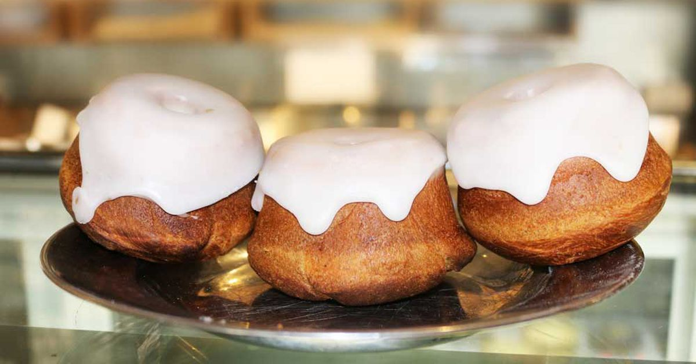

Sweetrolls

Description
Let me guess, someone stole your sweetroll.
Don't let anyone steel your sweetroll ever again. Instead of guarding your
hard-won baked goods against bandits and that pesky Thieves Guild, now
you can bake them in the quiet safety of your own home with no one the wiser.
Ingredients
For the Rolls:
- Unsalted Butter, Melted - 3 tablespoons
- Warm Whole Milk - 1 cup
- Honey - 2 tablespoons
- Pinch of Salt
- Egg - 1
- Active Dry Yeast - 2 teaspoons
- All-Purpose Flour - 2 cups
For the Frosting:
- Cream Cheese, Softened - 2 tablespoons
- Unsalted Butter, Softened - 1 tablespoon
- Powdered Sugar - 1/2 cup
- heavy Cream - 2 tablespoons
Steps
To Make the Rolls:
- Preheat the oven to 350°F. In a large bowl, combine the butter, warm
milk, and honey, stirring until the honey has disssolved. Add the salt
and yeast, followed by the egg and flour, and mix completely until
you have a smooth batter. Spoon evenlh into four 5-inch miniature
Bundt pans. Allow to rise for just 30 minutes, then bake for 15
minutes, until a toothpick inserted in the rolls comes out clean.
To Make the Frosting:
- While the rolls bake, cream together the cream cheese, butter,
and powdered sugar in a small bowl. Gradually add just enough heavy
cream to get a smooth, thick icing that barely runs off a spoon.
- When the rolls are finished baking, allow to cool for 5 minutes in
the pan, then tip out onto a cooling rack. When they are completely
cooled, spoon the icing over the tops of the rolls, letting it run down
the sides a little.